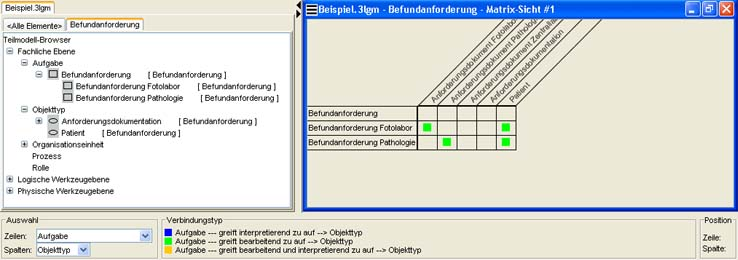

Die Matrix-Sicht
Die Matrix-Sicht soll einen einfachen Überblick über die Verbindungen der Elemente
innerhalb eines Teilmodells ermöglichen.
Die Zeilen der Matrix enthalten Elemente eines Typs. Die Spalten der Matrix enthalten Elemente eines
zweiten Typs, für den gilt, daß er mit dem Typ der Elemente der Zeilen verbunden werden kann.
Wenn eine Verbindung besteht, so wird diese als farbiges Kästchen in der Matrix angezeigt.

Abb.: Beispiel für die Matrixansicht
Am unteren Rand des Fensters werden drei Abschnitte angezeigt. Dies sind:
- Auswahl - zur Auswahl der Zeilen und Spaltenelementtypen der Matrix. Wählen Sie zuerst einen Typ für die Zeilenelmente.
Es werden dann für die Spalten nur noch solche Typen angezeigt, die mit dem gewählten Elementtyp für die Zeilen
verbindbar sind.
- Verbindungstyp - hier werden nach Auswahl der Zeilen- und Spaltenelementtypen die möglichen
Verbindungstypen und deren farbliche Kennzeichnung angezeigt.
- Position - Wenn Sie den Mauscursor über der Matrix bewegen, können Sie an dieser Stelle
ablesen, über der Verbindung welcher Elemente sich der Mauszeiger gerade befindet.
Um nun eine neue Verbindung zwischen zwei Elementen einzufügen, gehen Sie mit dem Mauszeiger in die
Matrixzelle, welche beide Elemente miteinander verbindet und klicken mit der rechten Maustaste in
dieses Feld. Es erscheint ein Kontextmenü mit dem Sie die Art der Verbindung (vorwärts/rückwärts und
interpretiert/interpretiert nicht) angeben können.